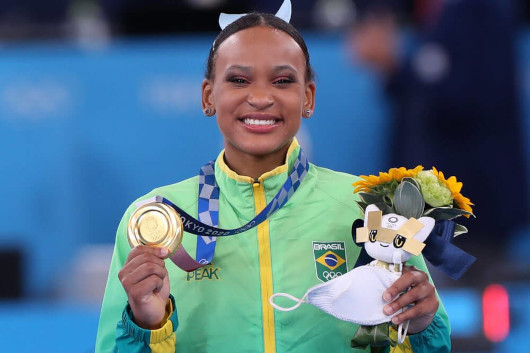
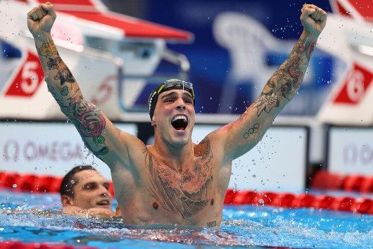
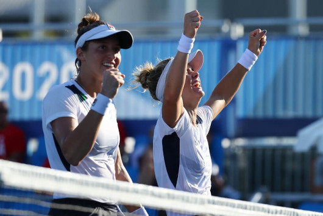
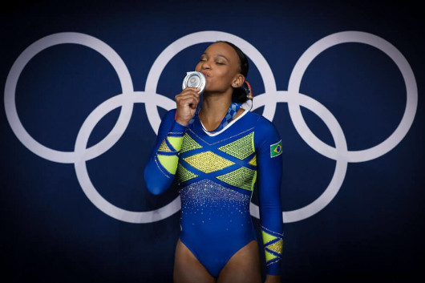
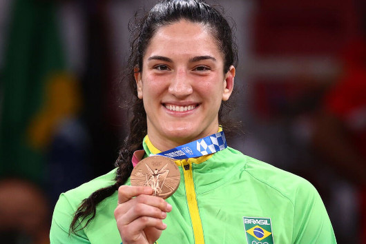
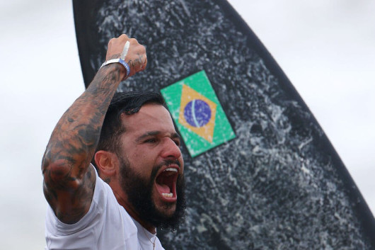
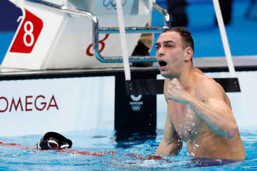
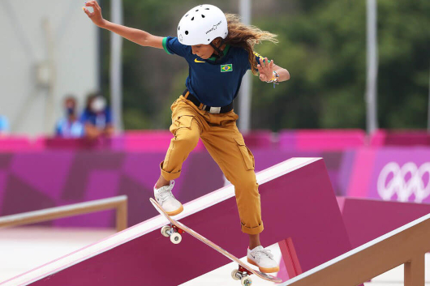

Rebeca Andrade é ouro nas Olimpíadas - Foto: Ricardo
Bufolin/Panamerica Press/CBG
Rebeca salta para a história
Depois do prata no individual geral, volta a subir ao pódio e
conquista sua segunda medalha nos Jogos. Rebeca é a primeira
brasileira a ganhar duas medalhas em uma edição de jogos.

Bruno Fratus comemora bronze - Foto: REUTERS/Marko Djurica
Enfim, medalhista olímpico!
Fratus fez história, conquista o bronze e dá ao país 4° medalha na
história dos 50m livre nas Olímpiadas.

Luisa Stefani e Laura Pigossi - Foto: REUTERS
Bronze como ouro.
Após semana intensa nas Olimpíadas de Tóquio 2020, dupla brasileira
comemora medalha olímpíca inédita: "Não consigo acreditar ainda no
que a gente consegiu".

Rebeca Andrade é prata nas Olimpíadas - Foto: Ricardo Bufolin/CBG
Pode vir mais por aí
Depois de conquistar a prata no individual geral, Rebeca Andrade
volta a competir em busca da segunda conquista nas Olimpíadas de
Tóquio.

Mayra Aguiar com a medalha de bronze - Foto: REUTERS/Sergio Perez
É bronze!
Brasileira vence sul-coreana Hyunji Yoon por ippon com imobilização
e conquista terceira medalha olímpica na carreira.

Ítalo Ferreira - Foto: REUTERS/Lisi Niesner
Entrou para a história!
O feito histórico de Italo Ferreira ao conquistar a primeira medalha
de ouro do surf nas Olimpíadas, trouxe grandes nomes da modalidade a
repercutirem esse marco.

Fernando Scheffer comemora medalha de bronze nos 200m livre - Foto:
Satiro Sodré/SSPress/CBDA
Parece que estou sonhando
Scheffer surpreende nos 200m livre e coloca o país no pódio em prova
que Gustavo Borges fez história em Atlanta - 1996 em 14ª medalha
olímpica para o país na modalidade.

Rayssa Leal fez uma manobra na final - Foto: Ezra Shaw/Getty Images
A fadinha encantou
Rayssa Leal faz história e é prata no skate street nas Olimpíadas de
Tóquio. Maranhense de 13 anos faz grande prova e é superada apenas
por japonesa.